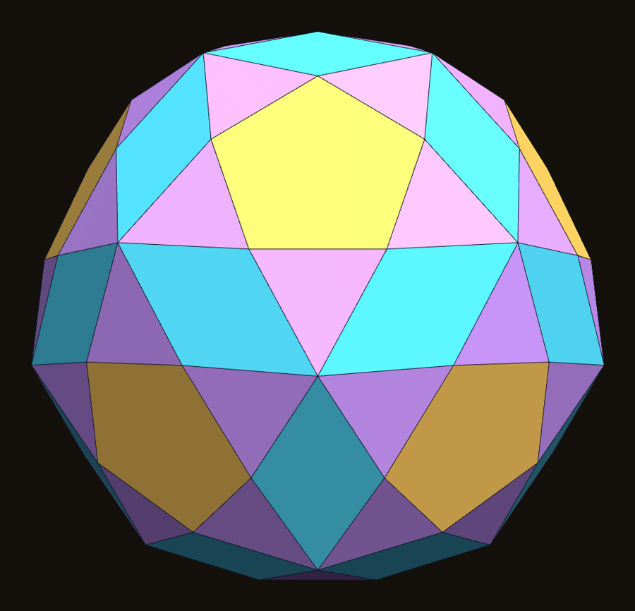
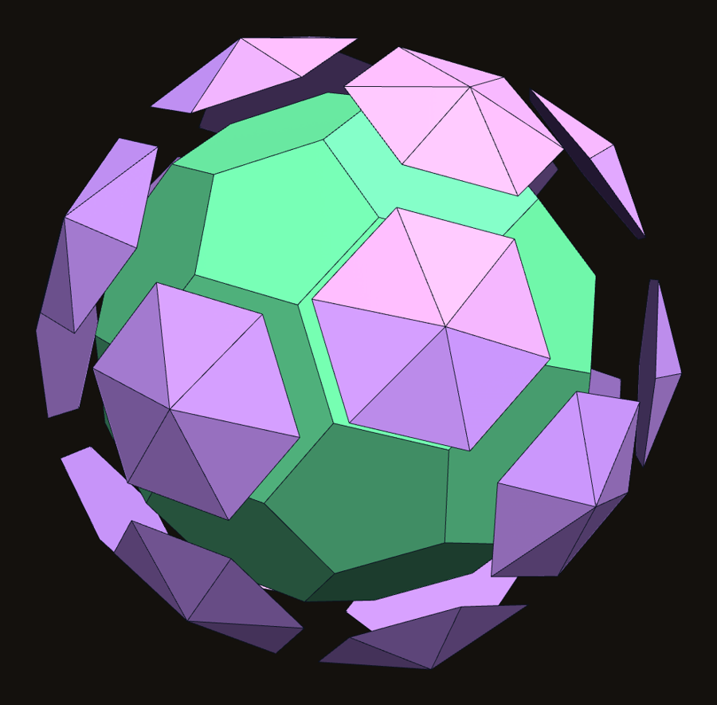

A convex solid of 102 faces: the truncated icosahedron with a low pyramid on each hexagon, flattened so that neighbouring triangles become rhombi
DICTO (artist, Osaka, Japan) · contact@dictospheres.com · https://dictospheres.com
Version 1 · 14 October 2026 · DICTO DOI: 10.5281/zenodo.23360858 · Licence CC BY 4.0 · Data, renders and checks: papers/tih at https://github.com/DICTOR-Master/kaleidohedra.
The solid is a stage of our Spheres of Dharma, found by building it, and the name is ours. Computation and checking were done with Claude (Anthropic).
Abstract. We describe a convex polyhedron with 102 faces, 80 corners and 180 edges that arises as the seventh stage of our Spheres of Dharma, a cycle of nested icosahedral shells. It is the truncated icosahedron with a low hexagonal pyramid (a Shield) on each of its 20 hexagons, at the one height at which the two triangles of neighbouring Shields across every hexagon–hexagon edge lie in a single plane. Its faces are 12 regular pentagons, 30 rhombi and 60 isosceles triangles; it has only two edge angles. Combinatorially it is Conway's hexakis truncated icosahedron k6tI (132 faces) with its 60 coplanar triangle pairs merged into 30 rhombi. The rhombi and triangles all touch one sphere; the pentagons lie a little inside it, so the solid has no insphere. We name it the DICTO Truncated-Icosahedral Hecatodihedron (hecatodi-, one hundred and two). This corrects an earlier statement of ours that all 102 faces touch one sphere.
1. Origin
The Spheres of Dharma (DISCOVERIES #23) grow an icosahedron, layer by layer, through the icosidodecahedron, the dodecahedron, the truncated icosahedron and the rhombic triacontahedron, back to an icosahedron φ³ larger. Taking each closed stage as one solid (our paper Capturing the In-betweens, DICTO DOI: 10.5281/zenodo.23345502), stage 7, the truncated icosahedron with a Shield on every hexagon, turned out to be convex, with fewer faces than its pieces suggest: 102. It is a station of our DICTO-TIC world (Transitional Icosahedral Cycles) and a shape in Polyhedraverse's DICTO Transitional Shells.


Fig. 1–3. (1) The Hecatodihedron: 12 regular pentagons (gold), 30 rhombi (cyan), 60 triangles (wisteria). (2) Down a five-fold axis. (3) The truncated icosahedron (green) and its 20 Shields, pulled apart.
2. The solid
Start from the truncated icosahedron of edge 1/φ (the scale of the Dharma build). On each hexagon stand a hexagonal pyramid whose apex lies on the hexagon's three-fold axis. Raise the apices together: there is one height at which the triangle of one Shield and the triangle of its neighbour, across each edge where two hexagons meet, lie in one plane. At that height the 60 such pairs become 30 rhombi, and the 60 triangles across the hexagon–pentagon edges stay triangles. The 20 apices are then the corners of a regular dodecahedron.
Faces
Number
Shape
Distance from the centre
Regular pentagons
12
side 1/φ = 0.61803
1.4384
Rhombi
30
sides 0.65097, angles 56.68° and 123.32°
1.5
Isosceles triangles
60
sides 0.61803, 0.65097, 0.65097
1.5
Corners: 80, the 60 of the truncated icosahedron (all at distance 1.5315) and the 20 Shield apices (at 1.6057), which form a regular dodecahedron of edge 3/φ² = 1.14590. Edges: 180, with only two edge angles, 159.45° and 163.53°. Euler's formula: 80 − 180 + 102 = 2. Volume 14.4042 at this scale.
A sphere, but not an insphere. The 30 rhombi and 60 triangles all lie at distance 1.5 from the centre, so 90 of the 102 faces touch one sphere. The 12 pentagons, the truncated icosahedron's own, lie at 1.4384, a little closer; the solid therefore has no insphere. Our earlier paper said that all 102 faces touch one sphere; that was wrong, and is corrected in its version 3.
3. Relation to known solids, and status
Combinatorially, a pyramid on each hexagon of the truncated icosahedron is Conway's hexakis truncated icosahedron, k6tI, with 80 corners and 132 triangular-and-pentagonal faces. The Hecatodihedron is the particular, flattened realisation in which 60 pairs of its triangles are coplanar, so that it has 102 faces and 180 edges. It is not an Archimedean, Catalan or Johnson solid. We did not find this flattened form in the catalogues listed below.
Where we searched (2026-10-13 and 2026-10-14), and the nearest solids we found:
Conway notation (Conway; Hart's Conway Notation for Polyhedra [3, 4]): the hexakis truncated icosahedron k6tI has 80 corners and 132 faces; the pentakis truncated icosahedron k5tI 72 corners and 132 faces; the hexapentakis truncated icosahedron ktI 92 corners and 180 faces [5]. None has 102 faces; ours is k6tI flattened.
Johnson solids and their near misses [6, 7, 8]: not a Johnson solid (its rhombi and triangles are not regular); the nearest near miss in face content is Kaplan's rectified truncated icosahedron (92 faces: 60 isosceles triangles, 12 regular pentagons, 20 hexagons) [8], which has hexagons where ours has rhombi.
Archimedean and Catalan solids and their compounds and duals in Wolfram MathWorld and the PolyhedronData collection [9]: the truncated icosahedron, the pentakis dodecahedron and their compound; nothing with 102 faces.
The Polytope Wiki (Miraheze) [10] and named polyhedra with 80 or 92 corners found by web searches for these counts and face lists: no match.
That is a report of where we looked, not a claim that the solid is unknown.
The name: hecatodi- for its 102 faces (Greek hekaton, 100, and di, 2), as in the hecatonicosachoron, the 120-cell; truncated-icosahedral for the solid it grows from.
4. Reproducibility
Included: data/tih_check.py and data/tih-checks.json (face kinds, distances, corners, edges, edge angles, volume and the dodecahedron of apices, computed from Polyhedraverse's shape TRANS_DHARMA_80), and data/tih_fig.py (the figures). The solid can be opened in Polyhedraverse (DICTO Transitional Shells) and seen arriving in DICTO-TIC, Loop 2.
References
DICTO, Capturing the In-betweens: a study of transitional polyhedral shells (2026), DICTO DOI: 10.5281/zenodo.23345502 (version 3 corrects the insphere statement).
DICTO, Spheres of Dharma (2026), DICTO DOI: 10.5281/zenodo.23310833.
J. H. Conway, H. Burgiel, C. Goodman-Strauss, The Symmetries of Things, A K Peters (2008) (Conway polyhedron notation).
G. W. Hart, Conway Notation for Polyhedra, https://georgehart.com/virtual-polyhedra/conway_notation.html.
Hexapentakis truncated icosahedron (with the k6tI and k5tI forms listed alongside), Wikipedia, https://en.wikipedia.org/wiki/Hexapentakis_truncated_icosahedron.
N. W. Johnson, Convex polyhedra with regular faces, Canad. J. Math. 18 (1966) 169–200.
V. A. Zalgaller, Convex Polyhedra with Regular Faces, Consultants Bureau (1969).
Near-miss Johnson solid, Wikipedia, https://en.wikipedia.org/wiki/Near-miss_Johnson_solid; Rectified truncated icosahedron, https://en.wikipedia.org/wiki/Rectified_truncated_icosahedron (C. S. Kaplan, 2001).
E. W. Weisstein, Truncated Icosahedron, MathWorld, https://mathworld.wolfram.com/TruncatedIcosahedron.html; Wolfram Language PolyhedronData, https://reference.wolfram.com/language/ref/PolyhedronData.html.